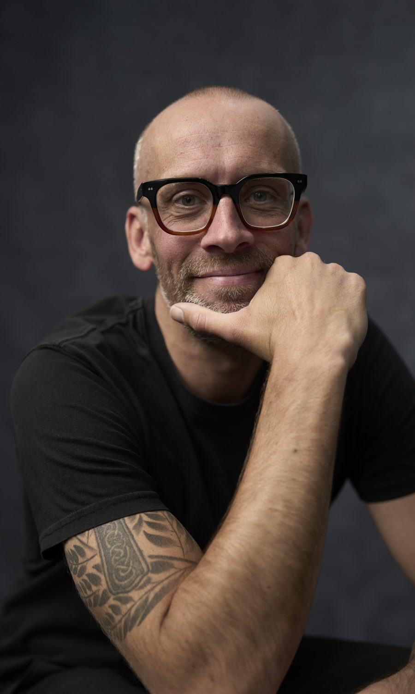

Strategic consultancy for leadership teams
Most organisations don't have an execution problem. They have a clarity problem.
Something Different helps leadership teams get to the root of complex business and brand challenges, define a clear strategic direction, and build practical plans that create sustainable growth.
The problem
Decisions take longer. Meetings multiply. Priorities compete. It's rarely a lack of effort or talent, it's a lack of clarity.
Motion gets mistaken for momentum. The team is working hard, yet no one can name the few things that would actually move the business.
Energy pours into the visible symptoms, while the real constraint underneath keeps generating them.
Each team improves its own numbers, and the organisation as a whole is quietly pulled out of shape.
A deck was written, presented and filed, while the decisions made every week carried on exactly as before.
Outcomes
The point isn't a smarter plan. It's a business that makes better decisions, and grows because of them.
because priorities are clearer.
because strategy comes first.
around a common direction.
from activity to outcomes.
for clearer reasons.
rather than accidental.
The Something Different Method
Strategy isn't a document. It's a series of better decisions, built in four disciplined stages.
What is really happening?
We diagnose the real constraint across your customers, category, culture and company, separating symptoms from causes.
What matters most?
We make the few choices that count: where to compete, who for, and where to concentrate effort for the biggest return.
How do we create advantage?
A clear, practical plan your team can execute, with priorities, measures and a way to track progress.
How do we sustain momentum?
We stay close so the strategy holds under pressure and keeps delivering over time.
Principles
Five beliefs that shape every engagement.
Symptoms are rarely the cause.
Strategy is choosing what matters most.
Good decisions are informed, not guessed.
Growth follows being chosen more often.
Our goal isn't dependency. It's better decision making.
Proof
Two decades advising leadership teams, from national institutions to fast-growing challengers.
Unified an entire organisation around a single brand platform and communications operating system.
Helped redefine the future of one of New Zealand's most recognised ingredient brands.
Built a customer-centred operating model to support sustainable growth.
Recent Something Different clients
Agency partners & collaborators
Earlier career
Gareth brought an incredible level of experience to our marketing strategy development, leveraging a solid framework he guided us through the process with a calm hand on the wheel. His ability to connect with the people in the room helped the team relax, which brought insights to the fore that were always known, but never captured. For a business that has always prided itself on its customer service, his insights clearly showed that there was more to do to bring the customer into the centre of our thinking, and unify the various parts of our business around this approach. We now have a clear view of what needs to be developed and built to meet our vision for growth in the short-term, and look forward to working with him in the near future to keep our thinking fresh and focused on long-term growth.
Mike Harrison, CMO, Tuatara Structures
A great strategist makes the solution feel so logical that it's immediately obvious, and right. Gareth takes the time to truly understand the business problem, asks the right questions, and constantly simplifies the strategy. What you get back is clear, concise direction, and often a great strapline too.
Ben Lott, CEO, Big on Writing

Meet Gareth O'Connor
Leadership teams typically bring me in when the path forward isn't obvious, when important decisions carry significant consequences, or when they need an independent perspective grounded in evidence rather than opinion.
For over 20 years I've helped leadership teams in New Zealand and around the world make better strategic decisions, across banking, telecommunications, energy, retail, FMCG, agribusiness, education and more. I created and teach Marketing & Strategic Intelligence in the University of Canterbury's Executive MBA, and I write regularly on brand, marketing and growth.
I care less about frameworks for their own sake, and more about the decisions that actually build a business: the ones that are easy to avoid and hard to get right.
My role isn't to arrive with all the answers. It's to help leadership teams ask better questions, make better decisions, and build businesses that are chosen more often.
Where to start
Every engagement begins with the same belief: solve the right problem first. Where you start depends on where you are.
Sometimes the biggest challenge isn't execution. It's understanding what's really happening. This engagement helps leadership teams uncover the root causes of performance challenges, align around the real opportunity, and build a shared understanding of where to focus.
Once the problem is understood, the next step is choosing a direction. Together we define the strategic focus, positioning and decisions that create long-term advantage.
Strategy only creates value when it changes what organisations actually do. This stage turns strategic direction into practical operating plans that teams can execute with confidence.
Some organisations don't need another agency. They need someone who helps leadership continue making better decisions. An ongoing advisory relationship providing challenge, guidance and strategic stewardship as priorities evolve.
Let's talk
Growth starts with understanding the real challenge, not rushing to a solution. If that's where you are, let's have a conversation.
Book a conversation